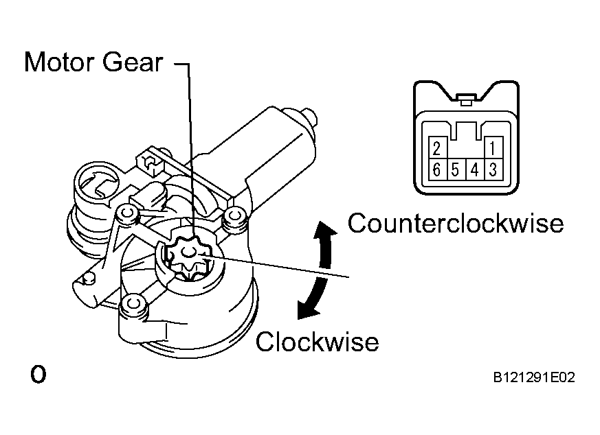

Power Window Regulator Motor: Inspection
- INSPECT POWER WINDOW REGULATOR MOTOR ASSEMBLY (FRONT LH)
- Check operation of the regulator motor.
- Apply battery voltage to the motor terminals.
- Check that the motor rotates smoothly.
OK
MEASUREMENT SPECIFIED CONDITIONMeasurement Condition Specified Condition Battery positive (+) --> Terminal 5
Battery negative (-) --> Terminal 4Motor gear rotates clockwise Battery positive (+) --> Terminal 4
Battery negative (-) --> Terminal 5Motor gear rotates counterclockwise 
Courtesy of © TOYOTA, LICENSE AGREEMENT TMS1002If the result is not as specified, replace the motor assembly.
- Check operation of the regulator motor.
- INSPECT POWER WINDOW REGULATOR MOTOR ASSEMBLY (FRONT RH)
- Check operation of the regulator motor.
- Apply battery voltage to the motor terminals.
- Check that the motor rotates smoothly.
OK
MEASUREMENT SPECIFIED CONDITIONMeasurement Condition Specified Condition Battery positive (+) --> Terminal 4
Battery negative (-) --> Terminal 5Motor gear rotates clockwise Battery positive (+) --> Terminal 5
Battery negative (-) --> Terminal 4Motor gear rotates counterclockwise If the result is not as specified, replace the motor assembly.
- Check operation of the regulator motor.
- INSPECT POWER WINDOW REGULATOR MOTOR ASSEMBLY (REAR LH)
- Check operation of the regulator motor.
- Apply battery voltage to the motor terminals.
- Check that the motor rotates smoothly.
OK
MEASUREMENT SPECIFIED CONDITIONMeasurement Condition Specified Condition Battery positive (+) --> Terminal 2
Battery negative (-) --> Terminal 1Motor gear rotates clockwise Battery positive (+) --> Terminal 1
Battery negative (-) --> Terminal 2Motor gear rotates counterclockwise If the result is not as specified, replace the motor assembly.
- Check operation of the regulator motor.
- INSPECT POWER WINDOW REGULATOR MOTOR ASSEMBLY (REAR RH)
- Check operation of the regulator motor.
- Apply battery voltage to the motor terminals.
- Check that the motor rotates smoothly.
OK
MEASUREMENT SPECIFIED CONDITIONMeasurement Condition Specified Condition Battery positive (+) --> Terminal 1
Battery negative (-) --> Terminal 2Motor gear rotates clockwise Battery positive (+) --> Terminal 2
Battery negative (-) --> Terminal 1Motor gear rotates counterclockwise If the result is not as specified, replace the motor assembly.
- Check operation of the regulator motor.